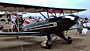
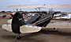
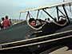
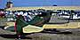
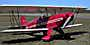
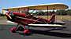
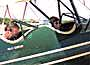
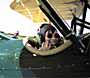

<html>
<!-- Mirrored from gryffinaero.com/models/hatz/hatzfin.html by HTTrack Website Copier/3.x [XR&CO'2014], Wed, 07 May 2025 15:40:17 GMT -->
<!-- Added by HTTrack --><meta http-equiv="content-type" content="text/html;charset=UTF-8" /><!-- /Added by HTTrack -->
<head>
<title>Other Hatz Biplanes</title>
<!-- Date: Thursday, August 6, 1998  11:37pm -->
</head>
<body bgcolor=white>
<center>
<!-- IMG SRC="/cgi-bin/Count2?uname=thayer|num=80|show=F" width=10 height=1>
<p>
<p><hr size=2 width=50%>
<center> 
<H3>Here are a few pix of other Hatz Biplanes</H3>
<p>
(click any image for a larger view)
<p><table width=600 border=1 cellpadding=1 cellspacing=1>
<tr>
<th><a href="otherhatzpix/51wdb.jpg"></a></td>
<th><a href="otherhatzpix/51wdc.jpg"></a></td>
<th><a href="otherhatzpix/51wda.jpg"></a></td>
<th><a href="otherhatzpix/severs.jpg"></a></td></tr>
<tr>
<td align=center>NX51WD<br>Billy Dawson's<br>1997 Grand Champion</td>
<td align=center>... and again, from behind</td>
<td align=center>Trying on NX51WD<br>(it fits like a glove)</td>
<td align=center>Dale Sever's<br>1998 award winning<br>Rolls Royce powered Hatz</td></tr>
<tr>
<th><a href="otherhatzpix/hatz2.jpg"></a>
<th><a href="otherhatzpix/hatz1.jpg"></a>
<th><a href="otherhatzpix/hatzb4.jpg"></a></TD>
<th><a href="otherhatzpix/hatzannie.jpg"></a></td>
</tr>
<tr>
<td align=center>On the ramp in Merrill</td>
<td align=center>NX659JH by<br>Jim Hammond</td>
<td align=center>Anne Moland before...</td>
<td align=center>... and after<br>her first ride</td>
</TD>
</tr>
</TABLE>
</center>
<p align=center><a href=hatz1.html>Return</a>
<p align=center><a href=http://www.weebeastie.com/hatzcb1/><B>The</B> Hatz Web Site</a>
<p>
<hr size=2 width=55%>
<p align=center>Copyright 1998, <A HREF="mailto:thayer@gryffinaero.com">Thayer Syme</A>.  All rights reserved</p>

</body>

<!-- Mirrored from gryffinaero.com/models/hatz/hatzfin.html by HTTrack Website Copier/3.x [XR&CO'2014], Wed, 07 May 2025 15:40:20 GMT -->
</html>
